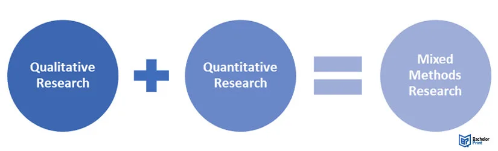

Expanded Nursing Uganda Explanation
Research Designs/Study Design should be reviewed through safe maternal and newborn assessment, early recognition of danger signs, respectful communication and timely referral. Connect the definition to vital signs, bleeding, fetal or newborn wellbeing, patient education and local protocol requirements.
Contents, 44 sections (tap to expand)
01 Overview
Study or Research design defines the approaches, methods and the rationale of picking that appropriate research design.
- Eg: descriptive cross sectional design
- Approaches can be Quantitative/qualitative or both
- Note: that it is advisable to use one of these at our level.
Research design acts as a blueprint for conducting a research study, outlining how variables will be operationalized for measurement, the selection of the sample of interest, data collection methods, and the intended means of data analysis.
Zikmund (1988) defines research design as a master plan that specifies the methods and procedures for measuring, collecting, and analyzing data.
At the core of a research design are answers to crucial questions:
- How will the study be conducted?
- What procedures will be adopted to obtain answers to research questions?
- What kind of data needs to be collected?
- How will the tasks required to complete the various research components be carried out?
02 Importance of Research Design
A robust research design is crucial for the success and validity of any study. Its importance can be summarized as follows:
- Foundation for Research: A well-defined research design acts as the solid base upon which the entire research stands. It provides a firm foundation, ensuring the study is structured and coherent from its inception.
- Smooth Research Operations: It ensures all research activities run smoothly and efficiently. By clearly outlining the steps and processes, researchers know what to expect and what comes next, minimizing disruptions.
- Efficiency Maximization: A good design provides maximum information with minimal effort, time, and cost. It makes research as efficient as possible by giving maximum information with minimum expenditure of effort, time, and energy.
- Blueprint for Research: Just as an architect needs a blueprint for building a house, research needs a proper design for conducting a study. This blueprint guides the entire process, from data collection to analysis.
- Simplifies Work: A carefully planned design simplifies work by ensuring that limitations are predetermined and solutions are already at hand, allowing researchers to overcome potential challenges effectively.
A well-planned research design is like a strong foundation for your study, making the research process efficient and effective.
03 Factors That Influence Choosing a Research Design
Several factors play a significant role in determining the most appropriate research design for a study. These include:
- Researcher’s Knowledge: The researcher’s familiarity with a particular design. Example: If a researcher is well-versed in qualitative research methods, they may choose to conduct an ethnographic study to gain an in-depth understanding of a specific community.
- Resource Availability: Availability of time, human resources, and willing respondents. Example: In a time-sensitive study, a researcher might opt for a cross-sectional design due to its efficiency in data collection and analysis.
- Ethical Considerations: Ethical aspects, including the ethical treatment of respondents. Example: In a study involving vulnerable populations, such as children, ethical considerations may lead the researcher to choose a design that prioritizes the protection of participants, like an experimental design.
- Feasibility and Relevance: The practicality and relevance of the design to the study. Example: A large-scale public health survey may require a design that is both feasible and relevant, such as a cross-sectional study that provides a snapshot of health trends in a population.
- Geographical Scope: The extent of the geographical area to be covered. Example: A study investigating regional variations in climate change impacts might choose a design that covers multiple countries and regions to capture a broad geographical scope, such as a comparative case study.
- Equipment Availability: Access to necessary research equipment and tools. Example: Research requiring advanced scientific equipment, like electron microscopes, would naturally be influenced to adopt experimental research designs.
- Research Type: The specific type of research, e.g., cross-sectional or longitudinal. Example: If a researcher aims to understand changes over time, they may select a longitudinal design to follow the same group of participants at multiple points in time.
- Control: The level of control the researcher can maintain over the study. Example: In a medical study testing a new drug’s effectiveness, a randomized controlled trial (RCT) design would provide a high level of control over the research conditions and variables.
- Population Type: The characteristics of the population under study. Example: Research on consumer preferences might employ a certain design to ensure the population’s characteristics are accurately represented in the study.
04 Types of Research Designs
There are three main overall methodologies (or designs): Qualitative, Quantitative, and Mixed.
05 Qualitative Research Designs:
- Qualitative research designs are primarily exploratory and descriptive in nature.
- They aim to understand and interpret the underlying meaning of phenomena.
- Qualitative studies often involve collecting non-numerical data such as text, images, or observations.
- Common qualitative research designs include phenomenology, ethnography, grounded theory, and case studies.
06 Quantitative Research Designs:
- Quantitative research designs focus on collecting and analyzing numerical data.
- They are structured, objective, and use statistics to establish relationships between variables.
- The primary goal of quantitative research is to measure, describe, and explain phenomena through numerical data.
- Common quantitative research designs include descriptive, analytical, experimental, and correlational studies.
07 Mixed Research Designs:
- Mixed research designs combine elements of both qualitative and quantitative research within a single study.
- These designs aim to provide a comprehensive understanding of complex research questions.
- Researchers typically collect and analyze both numerical and non-numerical data, often in two distinct phases, with one method informing the other.
- The choice of mixed design depends on the research objectives and the need for a holistic approach to the research question.
Below are some Research designs under each main design. There are many types of research designs, but we are going to explain the most commonly used/examined research designs.
08 Methodology Research Design Overview
- Research Design Type Specific Designs
- Quantitative Experimental Analytical Descriptive Correlational Quasi & Comparative
- Qualitative Phenomenology Ethnography Grounded Theory Case Study
- Mixed/Other Cross-Sectional Study Longitudinal Study Retrospective Study Cohort Study Randomized Controlled Trial Comparative Study
09 Qualitative vs. Quantitative Research Designs
Qualitative research deals with phenomena that are difficult or impossible to quantify mathematically, such as beliefs, meanings, attributes, and symbols.
Quantitative research deals with phenomena that are possible to be quantified mathematically. For example, experimental studies are quantitative in nature.
- Aspect Qualitative Quantitative
- Nature of Data Non-numerical (text, words) Numerical (numbers, measurements)
- Number of Respondents Fewer respondents Larger number of respondents
- Research Aim Formulation of hypotheses Testing formulated hypotheses
- Researcher’s Knowledge Limited knowledge on the topic More knowledgeable about the topic
- Nature of Data Collection Subjective (relies on respondents) Objective (researcher gathers data)
- Conclusiveness of Results Inductive (results inconclusive) Deductive (results are conclusive)
- Questioning Approach General and broad questions Specific and narrow questions
- Bias in Research Highly biased Less biased (researcher in control)
10 RESEARCH APPROACHES, RESEARCH DESIGNS AND WHAT THEY MEAN
- Research Approach Research design Meaning of the Research Design
- Quantitative Experimental design While using this design the researcher considers two cohorts or groups, one group receives the intervention (X), this is referred to as the treatment group while as the other group does not receive the intervention (X₁) this group is referred to as the control group. In this case the researcher is interested in assessing whether the intervention impacted on the treatment group and assessment of the counterfactual situation. Remember the interest of the researcher is to examine whether the independent variable (X) affects the dependent variable (Y) or not. The research will observe the behavior of the treatment group then make comparisons after a given period of time. In this case the treatment and control group's must be equivalent. Assignment of elements or subjects into these groups is random. Note that: These two groups must be protected against the influence of other external factors or forces. Some of the challenges faced in using this method include; Selection bias It requires a lot of expertise Challenge of ensuring internal validity since we assume that the two groups are equivalent. This is the most expensive design to adopt.
- Qualitative & Quantitative Quasi-Experimental Design However, this design is the most accurate if well executed and the researcher has the capacity to attribute changes or causes and effects including the assessment of the counterfactual (What would be the situation in the absence of the intervention at the same point in time). This research design is similar to the experimental research design with both a control and treatment cohort or group but the main difference is that in this research design the researcher does not assign elements or subjects to the cohort randomly but rather the researcher uses naturally occurring comparison groups. Therefore, as compared to experimental design where groups are assumed to be equivalent, in this case they are assumed to be similar but not equivalent.
- Qualitative Non-Experimental research design Most of the research designs used are examples of non-experimental research design. In this research design, the researcher does not compare groups. In this case the researcher attempts to find a representative sample and as well looks at identifying the characteristics, frequency, correlations and associations.
- Quantitative Correlation Research design This research design is used by a research who is interested in examining whether there is a relationship (positive or negative or no relationship) between 2 variables. These must be quantitative in nature. This design should be adopted when; The researcher is interested in determining the relationship between quantitative variables. Having 30 or more respondents increases the validity of the study statistical findings.
- Quantitative Descriptive Research design This is a research design that supports the researcher to adopt the unit of analysis in a more accurate way. Therefore, adopting this research design will enable the researcher to describe the state of affairs as they actually exist.
- Qualitative Exploratory Research Design This form of research design is adopted when the researcher does not have a vivid or clear picture of the problems he/she is likely to encounter during the study. This is usually used when the researcher is trying to explore a new field or a field that has not been well studied usually with little or no information about it. Therefore, the researcher aims at getting familiar with a formerly virgin field. Note that: this design is used when; The area has not been previously well studied for example previous researchers could have considered it as vague therefore committing little or no time to study it. The researcher could have a topic but failed to generate objectives and needs to generate them from the field. The researcher may conduct an exploratory study for the sake of being sure about what they are doing.
- Qualitative Case study Research Design This research design is adopted when a researcher intends to study a given unit of analysis in detail or holistically as compared to a mere sweeping statistical survey which may not be thorough enough. Considering a case study design will enable the researcher to develop an in-depth understanding of a particular situation. Since this design supports the researcher to generate responses to the questions of; Who, What, Where, When & How among others. Note that: The findings of such a study may generate a lot of knowledge but may not be used for generalization. It's quite expensive and time consuming to conduct an effective study using the design. Researchers should now understand that this is a research design and therefore avoid using it in their research titles for example "A Case Study of FEM Consultants and Research Centre Ltd." That is wrong, it should rather be "A Case of FEM Consultants and Research Centre Ltd"
- Quantitative Cross-sectional Research design The researcher adopts a cross-sectional research design when he/she intends to collect data from different respondents aimed at making inferences about the entire population at a point in time (at one point in time). This research design is adopted when the researcher intends to gather or collect data from respondents repeatedly over a given period of time.
- Quantitative Longitudinal Research Design This design could as well be referred to as "Longitudinal Cohort Design", this is where a researcher intends to collect data from the same participants / group of respondents/ cohort over a given period of time. This design is usually adopted in clinical psychology, in social personality and in Developmental psychology to examine changes in behaviors, thoughts as well as emotions. Note that: The main purpose of such a design is to enable the researcher examine for consistence (Reliability) of results. Examine whether there is a difference within the unit of analysis over time (the specified period of time).
- Qualitative One-short case study research Design This form of research design is used when the researcher expects to expose a single cohort test unit to an intervention and there-after that cohort is measured for purposes of making inferences. Important to note is that this design as well ignores the control group and only analyses the post-test results. Note that: Researchers must always provide a justification for the choice of design they have used or intend to use.
11 Experimental Study Design
Experimental study design involves introducing an intervention assumed to be the ’cause’ of change and waiting until it has produced or has been given sufficient time to create that change. Some essential experimental study designs include the following:
- After-only design: In this approach, the researcher knows that the population has been exposed to an intervention. They aim to study its impact on the population. Information about the baseline is usually gathered from respondents’ recall of the situation before the intervention or from existing records. This design is commonly used in impact assessment studies.
- Before-and-after design: This design addresses the issue of retrospectively constructing the ‘before’ observation by establishing it before introducing the intervention to the study population. Subsequently, when the program is fully implemented or assumed to have its effect on the population, an ‘after’ observation is conducted to determine the intervention’s impact.
- Control group design: In the control group design, the researcher selects two population groups – a control group and an experimental group. These groups are expected to be as comparable as possible in every respect except for the intervention. The experimental group receives or is exposed to the intervention, while the control group is not. Initially, the ‘before’ observation is made on both groups simultaneously. Subsequently, the experimental group is exposed to the intervention. When it is assumed that the intervention has had an impact, an ‘after’ observation is conducted on both groups. Any difference in the ‘before’ observation between the groups concerning the dependent variable(s) is attributed to the intervention.
12 General Characteristics of Experimental Designs
- Direct manipulation of independent variables in a controlled environment.
- Examination of the effect of independent variable(s) on one or more dependent variables.
- Focus on testing hypotheses.
- Total control of extraneous variables.
- Generation of empirical findings with internal and external validity.
- Some experimental designs use control and experimental groups (pure experimental design).
13 Advantages of Experimental Design
- It enables the researcher to control the situation, helping answer the question, “What causes something to occur?”
- It allows identification of cause-and-effect relationships between variables and distinguishes placebo effects from treatment effects.
- Experimental research designs support the ability to limit alternative explanations and infer direct causal relationships in the study.
- This approach provides the highest level of evidence for single studies.
14 Disadvantages of Experimental Design
- Experimental design can be artificial, and results may not generalize well to the real world.
- The artificial settings of experiments may alter participants’ behaviors or responses.
- Experimental designs can be costly if they require special equipment or facilities.
- Some research problems cannot be studied using experiments due to ethical or technical reasons.
- It can be challenging to apply ethnographic and other qualitative methods to experimentally designed studies.
15 Cross-Sectional Study Design
Cross-sectional study design is a research approach that involves different groups of people who vary in the variable of interest but share other characteristics, such as socioeconomic status, educational background, and ethnicity. For instance, researchers may select groups of people who are quite similar in most aspects but differ only in age. This allows any observed differences between groups to be attributed to age rather than other variables.
Cross-sectional studies are typically observational and are commonly used in descriptive research.
16 Characteristics of Cross-Sectional Studies
- Researchers record existing information within a population without manipulating variables.
- Data collection occurs at a single point in time.
- This research design describes characteristics within a population but does not establish cause-and-effect relationships between different variables.
- It enables researchers to investigate multiple aspects simultaneously, such as age, income, and gender.
17 What Cross-Sectional Studies Can Reveal
- Cross-sectional studies provide a snapshot of outcomes and associated characteristics at a specific point in time.
- Unlike experimental designs that involve active intervention to induce and measure change or create differences, cross-sectional studies focus on studying and drawing inferences from existing differences among people, subjects, or phenomena.
- Data is collected at a particular moment in time.
- While longitudinal studies require multiple measurements over an extended period, cross-sectional research aims to identify relationships between variables at a single moment.
- Groups chosen for study are deliberately selected based on existing differences in the sample rather than random sampling.
- This method can estimate the prevalence of an outcome of interest because the sample typically represents the entire population.
- Cross-sectional designs often use survey techniques for data collection, making them relatively cost-effective and efficient.
18 Disadvantages and Challenges of Cross-Sectional Design
- Finding individuals, subjects, or phenomena that are very similar except for a specific variable can be challenging.
- Results are static and time-bound, offering no insights into the sequence of events or historical contexts.
- Cross-sectional studies cannot establish cause-and-effect relationships.
- This design provides only a single snapshot of analysis, which may yield different results if conducted at another time.
- There is no follow-up to the findings.
19 Characteristics of Cross-Sectional Research Design
- No time dimension.
- Focuses on existing differences rather than changes following intervention.
- Groups are selected based on existing differences rather than random allocation.
Note: Cross-sectional research design differs from longitudinal research, which involves taking multiple measurements over an extended period of time.
20 Longitudinal Research Design
This is a study design that involves a series of sample measurements taken over a period of time. The study focuses on specific respondents or a sample over a specified period, examining changes in behavior.
21 Examples
- A study of a specific group of children’s academic performance over time.
- A study of the stages of human development by following a child from birth to adulthood.
Longitudinal studies provide deeper insights into issues. However, they can be expensive in terms of both time and money. Such studies may face setbacks if a respondent dies or transfers.
Longitudinal studies are further subdivided into Panel and Trend studies.
Panel Study: Involves using the same group or individual throughout the study period. One sample is studied continuously.
Trend Study: Involves different homogenous groups or samples in phases over the study. The results obtained from the study are then analyzed and compared to investigate trends of change. For example, one can observe the trend of change in the behavior of 1st-year students admitted in 2001 and 1st-year students admitted in 2002 using a trend longitudinal study.
22 What Longitudinal Studies Tell You
- Longitudinal data help analyze the duration of a specific phenomenon.
- Enables researchers to approach causal explanations usually achievable only through experiments.
- Permits the measurement of differences or changes in a variable from one period to another, describing patterns of change over time.
- Facilitates predicting future outcomes based on earlier factors.
23 What Longitudinal Studies Don’t Tell You
- The data collection method may change over time.
- Maintaining the integrity of the original sample can be difficult over an extended period.
- It can be challenging to show more than one variable at a time.
- This design often requires qualitative research data to explain fluctuations in the results.
- A longitudinal research design assumes that present trends will continue unchanged.
- It can take a long time to gather results.
- A large sample size and accurate sampling are needed to reach representativeness.
24 Case Study/Case Report Designs
A case study is an in-depth examination of the behavior of a specific phenomenon, such as a person, a group of people, an object, or a situation within a limited environment. The findings from a case study can be generalized to represent other cases within a population of interest. For instance, one can study the behavior of a child or a group of children from birth to adulthood and then generalize the results to other children.
25 What Case Studies Don’t Tell You (Disadvantages)
- A single or a small number of cases offer limited grounds for establishing reliability or for generalizing the findings to a broader population of people, places, or things.
- Intensive exposure to the study of a case can bias a researcher’s interpretation of the findings.
- This design does not facilitate the assessment of cause-and-effect relationships.
- Vital information may be missing, making the case challenging to interpret.
- The case may not be representative or typical of the larger problem under investigation.
- If a case is selected because it represents a very unusual or unique phenomenon or problem for study, then the interpretation of the findings can only apply to that specific case.
26 Retrospective and Prospective Study
A retrospective study is a longitudinal study that examines data from the past. For example, a researcher may review medical records from previous years to identify trends. In essence, retrospective studies “look back” in time. On the other hand, prospective studies “look forward” by collecting data as events unfold.
Retrospective Study Example in Health: A retrospective study in health might involve examining historical medical records of cancer patients to determine the effectiveness of a particular treatment protocol used in the past. Researchers can analyze the outcomes of these patients based on the treatment they received and other variables to gain insights into the treatment’s success rates.
Prospective Study Example in Health: A prospective study in health could involve tracking a group of pregnant women from early pregnancy through childbirth and beyond. Researchers would collect data on factors like prenatal care, diet, and lifestyle, and follow the women to monitor pregnancy outcomes, birth complications, and the health of their babies after birth. This type of study helps in understanding the factors that influence maternal and child health during and after pregnancy.
27 Cohort Study Design
A cohort is a group of individuals who share a common characteristic or experience. For instance, a group of people born on the same day or during a specific period, like 1981, can form a birth cohort. The cohort design is a type of observational study in which one or more groups (cohorts) are followed over time, and subsequent assessments are made to determine the association between the initial characteristics or risk factors of the participants and specific outcomes or diseases. As the study progresses, the outcomes of participants in each cohort are measured, and researchers analyze the relationships with particular characteristics.
28 Example of a Cohort Study
To investigate whether tobacco exposure is associated with the development of lung cancer, an investigator forms two groups (cohorts) of adolescents. One group consists of individuals who have never smoked tobacco and continue to refrain from smoking (unexposed), while the other group comprises tobacco smokers (exposed). The investigator then follows both groups for a specified period and observes how many individuals in each cohort develop the disease and how many do not. Below is a table illustrating the outcomes:
- Cohort Develop Disease Do Not Develop Disease Total Incidence of Disease
- Smoke tobacco 84 2916 3000 0.028
- Do not smoke tobacco 87 4913 5000 0.0174
29 Advantages of Cohort Studies
- Subjects in cohorts can be matched to limit the influence of confounding variables.
- Cohort studies can demonstrate that potential causes precede the outcomes.
- Original or secondary data can be used in this design.
- Cohort studies are often less expensive and easier to conduct than randomized controlled trials.
30 Disadvantages of Cohort Studies
- Identifying cohorts can be challenging due to confounding variables.
- Lack of randomization may lead to imbalances in patient characteristics.
- Blinding or masking is difficult in cohort studies.
- Outcomes of interest may take time to occur.
- Additionally, they might take a long time to complete, potentially impacting the validity of findings. The lack of randomization in cohort studies also reduces their external validity compared to randomized studies.
31 Randomized Controlled Trial (RCT)
The primary difference between a Randomized Controlled Trial (RCT) and a cohort study is the random selection of samples. RCTs involve the random allocation of participants to different clinical interventions, including a control group. These trials seek to measure and compare the outcomes following the interventions. RCTs are purely experimental and quantitative in nature.
Example: In a study to determine whether painkillers are necessary for males who have just undergone circumcision, 200 eligible men were randomly assigned to two groups. One group received Panadol tablets as pain relief immediately after surgery, while the other group received a placebo. The results showed that a majority (90%) of patients given Panadol reported no pain, whereas over 90% of patients on the placebo reported significant pain.
32 Advantages of RCT
- RCTs are considered the most reliable form of scientific evidence.
- They reduce spurious causality.
- RCTs influence healthcare policy and practice.
33 Limitations of RCT
- The external validity of RCT results may be limited.
- Ethical concerns may arise in some situations.
- The time required to observe outcomes can be extensive.
34 Case Series/Clinical Series
A case series is a descriptive study that follows a group of patients or subjects with known exposure, such as individuals who have received similar treatments or whose medical records are examined for exposure and outcomes. Case series can generate hypotheses for further studies but cannot establish causal relationships.
Internal validity in case series studies is generally low because they lack a comparator group exposed to the same intervening variables.
35 Correlation Study Design
A correlation study investigates whether two variables are correlated, meaning an increase or decrease in one variable corresponds to a change in the other. However, correlation does not imply causation. Three types of correlation exist: positive, negative, and no correlation.
A correlation coefficient, which ranges from +1 to -1, is typically used to quantify the strength and direction of the correlation between variables.
36 There are three primary types of correlation
- Positive Correlation: This type of correlation occurs when an increase in one variable is associated with an increase in another, and a decrease in one variable is linked to a decrease in the other. For example, an individual’s wealth may exhibit a positive correlation with the number of rental houses they own. This suggests that as wealth increases, so does property ownership.
- Negative Correlation: Negative correlation is observed when an increase in one variable is connected to a decrease in another, and vice versa. For instance, there might be a negative correlation between the level of education in a country and its crime rate. If education levels improve in a country, the crime rate tends to decrease. However, it’s essential to note that this does not mean that a lack of education directly causes crime. Both factors might share a common underlying cause, such as poverty.
- No Correlation (Uncorrelated): In cases of no correlation, changes in one variable do not correspond to changes in the other, and vice versa. For example, among millionaires, there may be no correlation between their level of wealth and their level of happiness. This indicates that an increase in wealth does not necessarily lead to an increase in happiness.
37 Comparative Study Design
Comparative studies involve examining two or more cases, specimens, or events that share similarities in some aspects but differ in others. The goal is to determine the reasons for these differences and to generalize findings to larger groups from which the cases originated. The plausibility of generalization increases when several cases from the same group are considered.
38 Ethnographical Research Design
Ethnographical research, often referred to as ethnography, involves the in-depth study of naturally occurring behavior within a particular culture or social group. Its primary aim is to understand the relationship between culture and behavior. Culture in this context refers to the beliefs, values, and attitudes of a specific group of people. Ethnographic research methods were developed by anthropologists to study and describe human cultures.
Characteristics of good ethnography, as described by Spindler & Hammond (2000), include:
- Extended Participant Observation: Researchers immerse themselves in the culture or social group they are studying and observe behavior over an extended period.
- Long Time at Site: Researchers spend a significant amount of time within the community or culture being studied to gain a deep understanding of their way of life.
- Collection of Large Volume of Materials: This includes detailed notes, audio recordings, video tapes, and other data, often without having specific hypotheses or predefined categories at the outset of the study.
39 Phenomenological Research Design
Phenomenological research is the study of phenomena, which can be events, situations, experiences, or concepts as they are perceived by individuals. This approach aims to understand and describe the essence of lived experiences from the perspective of the participants. Phenomenology begins with the acknowledgment that there is a gap in our understanding and that clarification will be beneficial.
In phenomenological research, researchers seek to explore the essence and meaning of experiences as they are lived. It often involves in-depth interviews and analysis to uncover the common themes and structures that underlie these experiences. This research design is valuable in understanding how individuals make sense of the world and their experiences.
40 Grounded Theory Research Design
Grounded theory is a systematic research methodology that aims to develop theories or concepts that are grounded in data. It was developed by sociologists Barney Glaser and Anselm Strauss in the 1960s. The primary goal of grounded theory is to generate new, abstract theories based on empirical observations, rather than testing existing theories.
41 Nursing Uganda Clinical Lens
Use Research Designs/Study Design as a practical nursing topic, not only a memorized definition. Translate theory into safe decisions, accountability, communication and service improvement.
- What to understand first: define research designs/study design, identify the normal or expected pattern, then explain what changes when the patient is unwell.
- Why it matters in care: the nurse must recognize risk early, explain findings clearly, document accurately and know when to escalate.
- How to revise it: connect each point to assessment, nursing diagnosis or care problem, intervention, rationale and evaluation.
42 Assessment Guide
- The problem, stakeholders, available resources, policy requirements and ethical issues.
- Risks to patients, staff, confidentiality, quality, costs and continuity.
- Documentation, reporting lines, supervision and evaluation measures.
43 Nursing Priorities, Rationales and Outcomes
- Use evidence, policy and professional standards to guide action.
- Communicate clearly, document decisions and protect confidentiality.
- Evaluate whether the action improves safety, learning or service delivery.
The rationale for these priorities is patient safety: nursing actions should prevent deterioration, reduce discomfort, support recovery and create clear evidence for the next caregiver.
- Expected outcome: The plan is documented, realistic, ethical and improves patient care or learning outcomes.
44 Patient Teaching and Revision Check
- Explain research designs/study design in simple language the patient or caregiver can repeat back.
- Teach warning signs, medicine or follow-up instructions, hygiene or lifestyle points where relevant.
- For exams, prepare a short answer using: definition, causes or risk factors, signs, assessment, management, complications and prevention.
- For ward practice, document baseline findings, actions taken, patient response and the plan for review.
Illustrations and Diagrams (2)


Related Video Lectures
Watch nursing lecture videos on YouTube for this topic. Opens in a new tab.
Watch on YouTubeExternal link: YouTube may use its own cookies and terms. Nursing Uganda is not affiliated with YouTube.